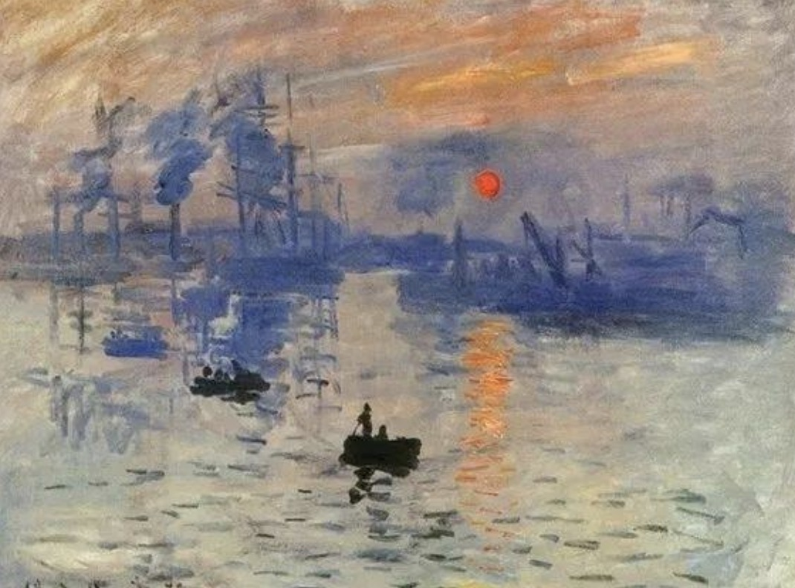

基于深度学习的世界名画风格模拟——陈祥诚毕业设计
暂时没有适配移动端,生成图像可能会黑屏！
风格化图像
内容图像大小
选择内容
照一张照片
从电脑文件中选择
楼房
人物
大桥
海滩
城市
天安门

风格图像大小
选择一个风格图片
从电脑文件中选择
选自网络的随机图片
《日出·印象》-莫奈
《呐喊》-爱德华·蒙克
《向日葵》-梵高
《哭泣的女人》-毕加索
《星空夜》-梵高
《蒙娜丽莎》-达·芬奇
图案1
图案2
砖块
云
塔
线条
风格1
风格2
风格3
风格化融合度
正在调用深度学习模型...请稍等...
Style A Size
Style B Size
Content image size
Stylization Ratio
Loading stylization model. Please wait..
快速模式 (9.6MB)
高品质模式 (36.3MB)
快速模式 (2.4MB)
高品质模式 (7.9MB)
照相机
×